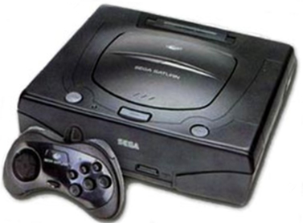

Panzer Dragoon Saga
Released: April 30, 1998
 |
| Panzer Dragoon Saga was one of the very last games released for the Sega Saturn system. It is the third game in the Panzer Dragoon series. Soon after its release, the Saturn went under and disappeared from store shelves. During the Saturns unfortunate fate, it was very unlikely that anyone would have heard about or would have had the privilage of playing this amazing game. Unlike its predecessors that were rail shooters, this game went down a different path and took the rpg or role playing approach. The game is about a young hunter named Edge, who is saved by a mysterious dragon. Ancient technologies and bio-engineered creatures, left over by a long forgotten people, threaten to control mankind. With the help of his dragon and a mysterious girl named Azel, Edge sets off on an epic adventure to free the world form the will of the Ancients. What makes this game stand out from all other role playing games is: its great music, deep and mysterious atmosphere, and unique artistic style. The Saturn was pushed to its limits. The world of Panzer Dragoon Saga, comes to life with great detail. This game had the best graphics ever seen on the Saturn. With less than 10,000 copies released here in the states, if you missed out on this great game and want to play this epic masterpiece, join the rest of us who had to fork over more than 300 bucks on Ebay, just to play it. I can tell you one thing: it's well worth the money! |
|  The ill-fated Sega Saturn System. |
| The Sega Saturn analog controller, essential for 3D games like Panzer Dragoon Saga. |
Panzer Dragoon Related Topics |
What's it
Like to Play Panzer Dragoon Saga? |
| 5. The Player Menu |
| 6. The Battle System |
| 7. The World Map |